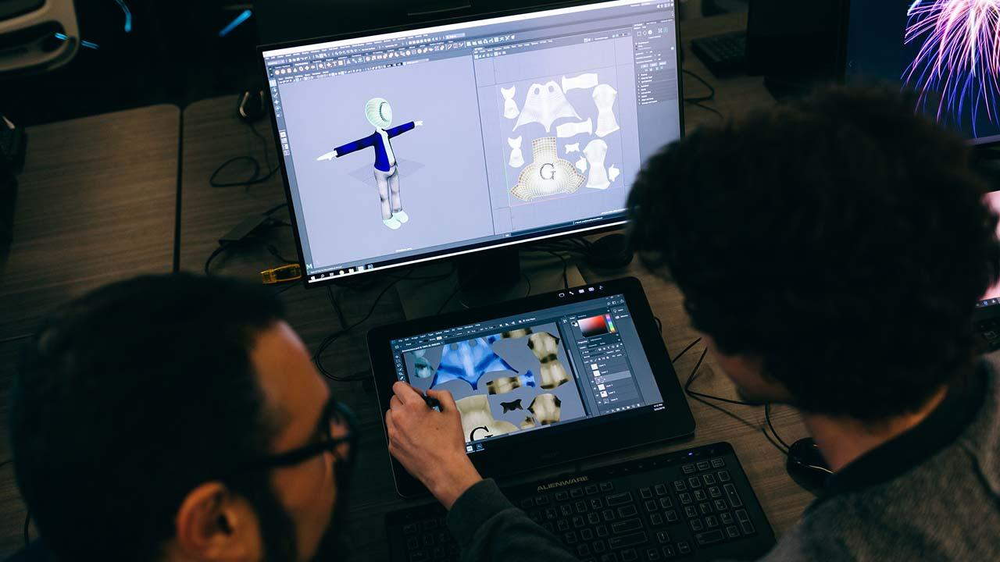

Studio Track
Animation and Visual Effects
3D modeling, texturing, lighting, rendering, rigging, motion, and visual storytelling.
West Lafayette • Indianapolis
Purdue School of Applied & Creative Computing
This tool reorganizes the 9 undergraduate programs into an interactive course visualization tool. Open any program card to view required CIT, CGT, and CNIT coursework, then try the quiz for a recommendation!
Studio Track
3D modeling, texturing, lighting, rendering, rigging, motion, and visual storytelling.

IT Systems Track
Applications, databases, systems, IT projects, and problem solving for real organizations.

Infrastructure Track
Secure, efficient, and reliable wired and wireless network infrastructure.

Security Track
Secure coding, cryptography, forensics, UNIX fundamentals, law, and incident response.

Data Track
Statistical thinking, databases, machine learning, and data-driven decision support.

Interactive Media Track
Game design, animation, visualization, rendering, programming, and production practice.

Experience Design Track
Attraction design, immersive environments, themed spaces, and creative production workflows.

Human-Centered Track
Human-centered product design focused on research, screens, strategy, and usability.

Web App Track
Front-end, back-end, databases, interactive media, and secure user-friendly web systems.